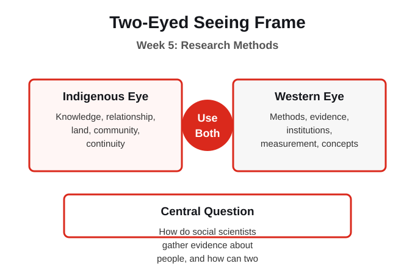
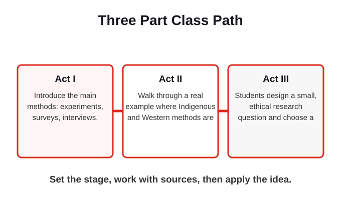
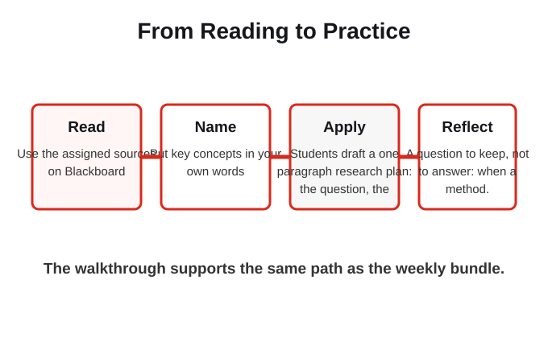

This course moves from naming the social sciences and the Two-Eyed Seeing frame, through the foundation of Indigenous Canada and the methods of social research, into the disciplines themselves, and back to the personal map you draw and then revisit. This week turns inquiry into method: how social scientists actually collect and interpret evidence, including both quantitative and qualitative approaches, and how Indigenous research methods add relationship and responsibility.
The central question is: How do social scientists gather evidence about people, and how can two ways of knowing make the evidence stronger?
How do social scientists gather evidence about people, and how can two ways of knowing make the evidence stronger?

The Western eye brings surveys, experiments, statistics, interviews, and ethnography. The Indigenous eye brings community based and relational methods where the researcher is accountable to the people studied. Two-Eyed Seeing asks how a study can honour both rigour and relationship.
The frame works only when both ways of knowing remain visible and neither is treated as an add-on.
What does this week show about quantitative method?

Act I (Historical Context, Setting the Stage): Introduce the main methods: experiments, surveys, interviews, ethnography, and the difference between quantitative and qualitative evidence. Connect to the steps of inquiry from Week 2. Act II (Media, Primary Scene): Walk through a real example where Indigenous and Western methods are paired, using the Reid (Nisga'a) and colleagues fisheries study, and discuss what each method could and could not see. Act III (Discussion, Application): Students design a small, ethical research question and choose a method, naming who they would be accountable to.
The week is built as a path: set the context, work with sources, then apply the idea in a bounded way.
Where does a Western disciplinary lens help, and where does it need an Indigenous lens beside it?
This week uses a short lecture frame, source guided reading, key concepts, guided notes, and one low stakes practice. The goal is to make the social science useful and to keep both eyes open, without turning the week into a personal disclosure task. The practice is: Students draft a one paragraph research plan: the question, the method, the evidence it would produce, and who they are accountable to. The reflection question is: A question to keep, not to answer: when a method counts only what it can measure, what gets quietly left out of the result?
The practice asks for careful application, not private disclosure. Use public, fictional, or general examples when that is the safer choice.
Whose knowledge is being treated as the default, and who decided that?
How do social scientists gather evidence about people, and how can two ways of knowing make the evidence stronger?
The Western eye brings surveys, experiments, statistics, interviews, and ethnography. The Indigenous eye brings community based and relational methods where the researcher is accountable to the people studied.
The readings are named here for orientation, but the full texts stay on Blackboard or their approved access paths.
Draft a one paragraph research plan: the question, the method, the evidence it would produce, and who they are accountable to.